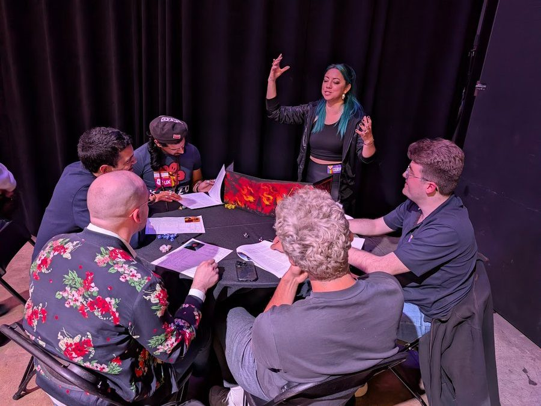
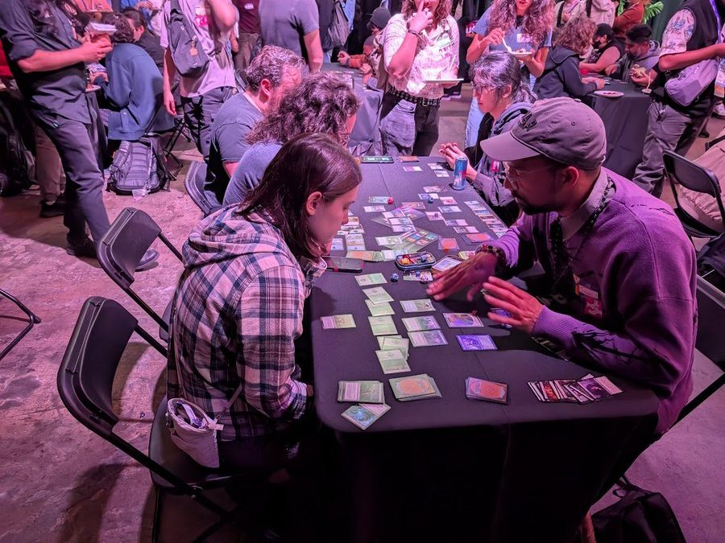
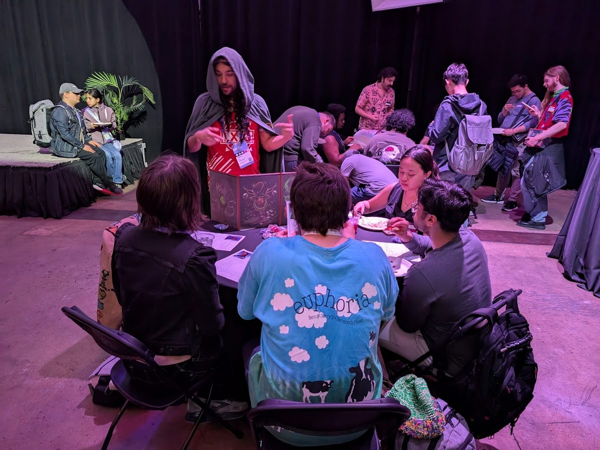
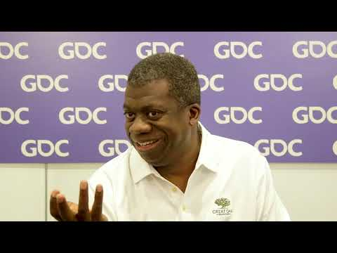
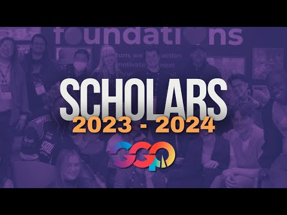
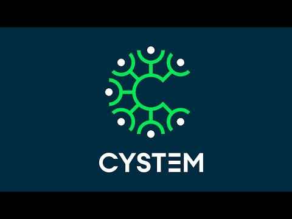
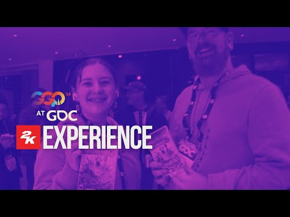
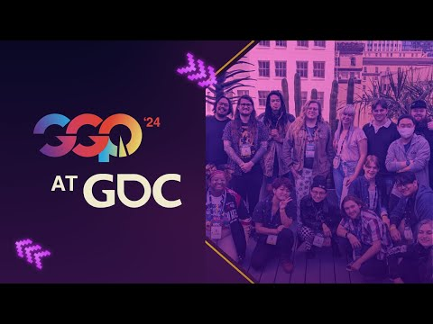
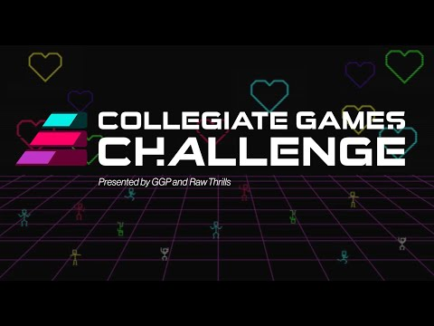

Zero Proof Board Game Night
Monday, March 1, 2027, 5 to 11 pm, The Foundry SF. Alcohol-free and all ages. 602 guests in 2026.
Community
Where the cohort, the industry and Supporters meet, online and at GDC.

GDC week anchors the calendar. GGP events are alcohol-free and open to all ages.
Monday, March 1, 2027, 5 to 11 pm, The Foundry SF. Alcohol-free and all ages. 602 guests in 2026.
Tuesday, March 2, 2027, 9 to 10:30 am, at GDC. Room to come. Scholars meet the industry over breakfast.
Tuesday afternoon, March 2, 2027, The Foundry SF. The 8th Annual Tea Party, then the Mixer from 5:30 to 7:30 pm.
Tuesday, March 2, 2027, 8 pm to 1 am, The Foundry SF. Alcohol-free.
Each January, Scholars jam together, with workshops beforehand.
An online gathering for Pride and other employee groups across games. No date yet.



“I've been alcohol free for nine years and I can't tell you how much this event means to me.”A guest at Zero Proof Board Game Night, 2026
“This is my first GDC, and in a day of 'best evers', THIS is the actual best ever!”A guest at Zero Proof Board Game Night, 2026
For Professionals
Review a portfolio, host a studio tour or join a developer Q&A.
Scholars ask for portfolio reviews and studio visits more than anything else. One hour from you answers that.
Scholars and community conversation.
Community guidelines apply. Report a concern. To confirmOne permanent invite. The live site uses two.
Professionals, partners and job news.
Follow for open roles and partner updates.
More than 80 talks and films on the GGP channel, free to watch. Start with these.

What is GGPWhy GGP began in 2006 and how it has grown. 2023.
GGP Scholars 2023 to 2024Scholars on what the program gave them. 2024.
CYSTEM ProgramThe graduate program with USC, NYU and Carnegie Mellon. 2024.
The 2K ExperienceScholars visit 2K during GDC 2024.
GGP at GDC 2024Scholars, panels, roundtables and campus tours.
Collegiate Games Challenge 2025The trailer for the national student competition.Three doors. Pick yours.